Original assignment context: paths, benefits, and course outcomes
This reference summarizes the original CP2 assignments supplied by Rich. The learning benefits below explain the assignment design; they are not claims of measured results. The storyboard narration remains proposed wording.
Connection to ENG 1320 outcomes
- SLO 1 / Communication: Recognize and explain a community’s specialized language through vocabulary and definitions.
- SLO 2 / Critical thinking: Investigate the community, evaluate evidence, and refine an inquiry.
- SLO 3 / Communication: Interpret terminology and accurately express its meaning in the student’s own language.
- SLO 4 / Personal responsibility: Distinguish verified research from generated suggestions and document where information came from.
Shared submission and clarity
Both paths earn the same five points and require a community paragraph, 10–15 documented terms, and an updated question, submitted as a PDF. Students may identify a changed topic or artifact at the beginning. The updated question should reflect new understanding; it does not need added jargon.
Concise explanation for the video: AI helps students find possibilities to test. Non-AI research helps students discover the conversation directly. Both require students to judge usefulness, explain meaning, document evidence, and improve their question.
01 · 00:00–00:15
Current video reference · 00:00
Current screen
Presenter introduction; title slide begins.
Proposed visual
Presenter, then title: Student Agency, Shared Outcomes.
Proposed narration
One assignment can offer two research paths while asking every student to demonstrate the same learning. Here is how that choice works in a composition assignment.
Revision purpose
Establish the purpose immediately.
02 · 00:15–00:30
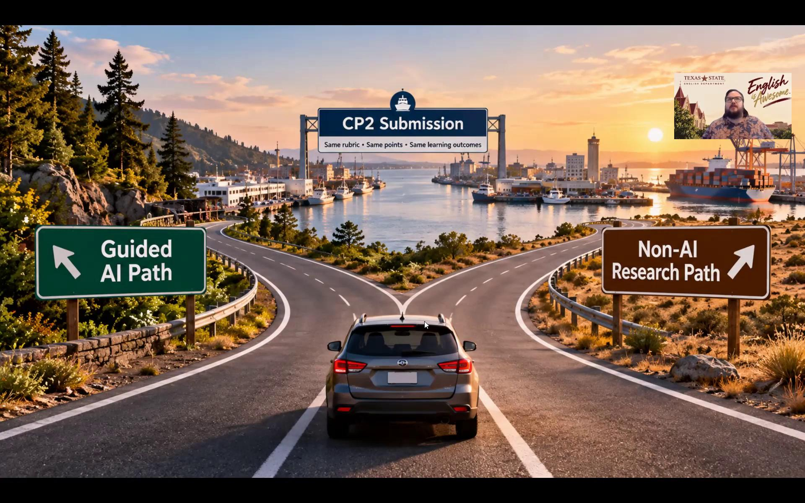
Current video reference · 00:25
Current screen
Title slide gives way to a fork labeled Guided AI Path and Non-AI Research Path; both lead to CP2.
Proposed visual
Keep the fork graphic; label the destination: Same outcomes. Same rubric.
Proposed narration
Students choose guided AI or non-AI research. Both routes lead to a discourse community, useful vocabulary, and a more focused research question.
Revision purpose
Frame choice around learning, rather than tool preference alone.
03 · 00:30–00:45
Current video reference · 00:35
Current screen
Second route graphic; transition to Canvas assignment.
Proposed visual
Show two benefit cards: AI — evaluate possibilities; Non-AI — discover the conversation.
Proposed narration
The AI path offers possibilities to evaluate. The non-AI path teaches students where a community’s conversations happen and how to enter them. Both keep the student responsible for the research.
Revision purpose
State an advantage of each path before explaining the steps.
04 · 00:45–01:00
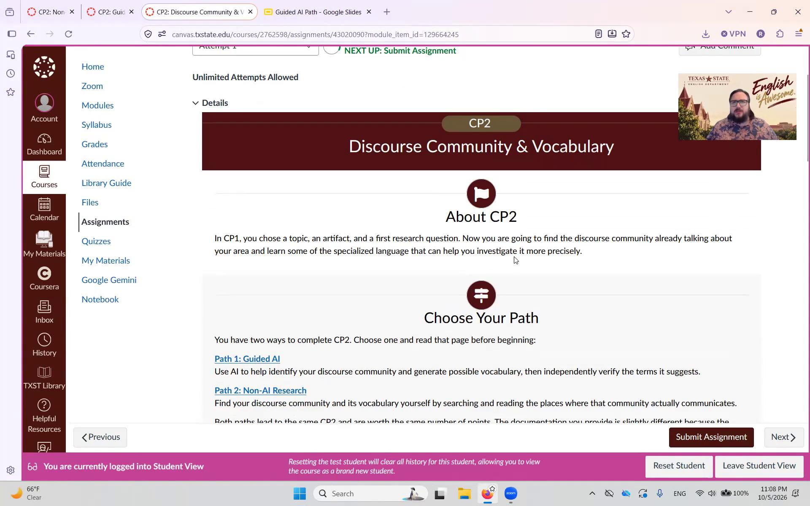
Current video reference · 00:50
Current screen
Canvas: About CP2 and Choose Your Path.
Proposed visual
Zoom into Guided AI. Add: Generate possibilities → Make a choice.
Proposed narration
On the AI path, students give the tool their topic, artifact, and question. Its suggestions offer starting points when the community or its language is unfamiliar. Students make the final choice.
Revision purpose
Explain how AI can help students begin while keeping decisions with the student.
05 · 01:00–01:15
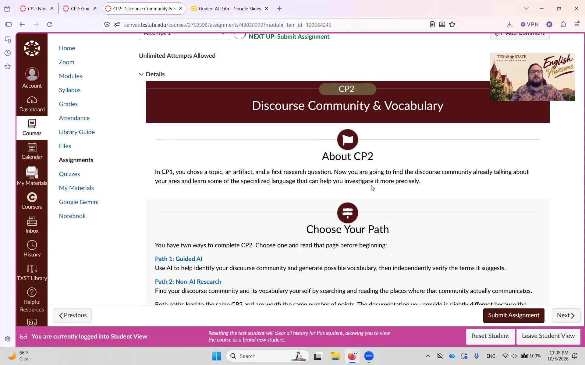
Current video reference · 01:05
Current screen
Canvas holds on the assignment introduction and path choices.
Proposed visual
Show an AI-suggested term beside its use in a non-AI community source. Add: Real? Accurate? Useful?
Proposed narration
Students then check every suggested term in a non-AI source. They learn to distinguish generated possibilities from evidence and decide whether a term is real, accurate, and useful to their inquiry.
Revision purpose
Connect AI use to critical thinking and responsibility for evidence.
06 · 01:15–01:30
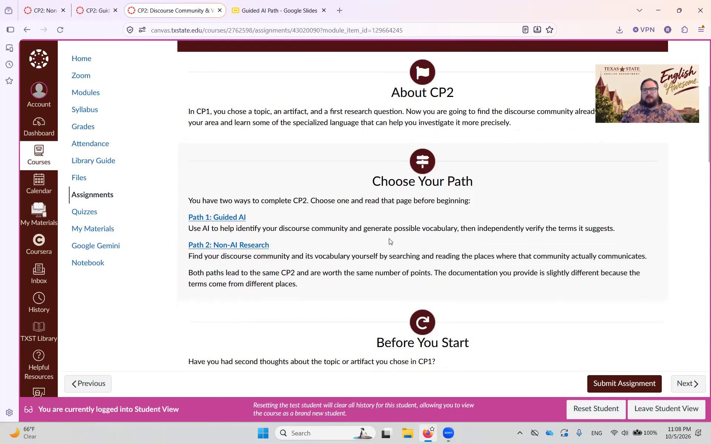
Current video reference · 01:20
Current screen
Scroll through path descriptions and Before You Start toward common submission requirements.
Proposed visual
Highlight Non-AI Research. Add: Start broad → Follow conversations → Notice patterns.
Proposed narration
On the non-AI path, students begin broadly, follow links, and notice recurring authors, organizations, and specialized language. They build search skills and learn how to find their way into a community’s conversation.
Revision purpose
Make the value of direct discovery explicit.
07 · 01:30–01:45
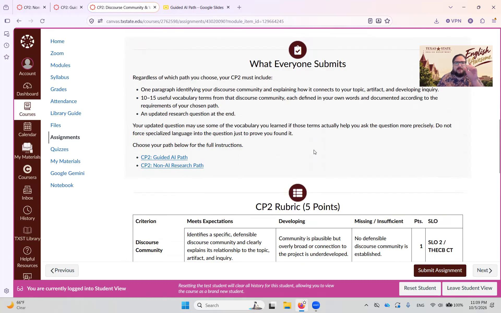
Current video reference · 01:30
Current screen
What Everyone Submits; shared rubric and course-outcome alignment below.
Proposed visual
Show the three common deliverables and five-point rubric; label: Same outcomes. Same points.
Proposed narration
Everyone submits a community paragraph, ten to fifteen useful terms defined in their own words, and an updated question. Both paths earn the same five points under the same rubric.
Revision purpose
Show the common basis for assessing learning.
08 · 01:45–02:00
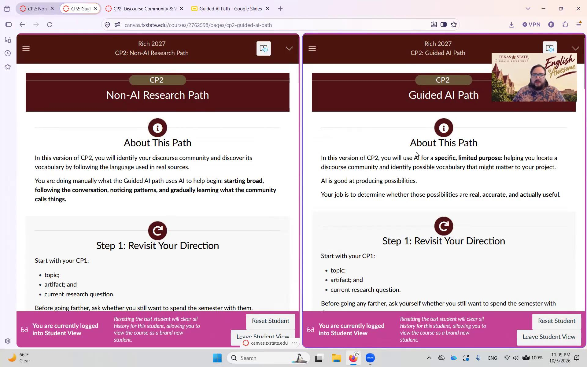
Current video reference · 01:50
Current screen
Side-by-side Non-AI Research Path and Guided AI Path pages; About This Path and first steps.
Proposed visual
Align the common starting step on both pages. Highlight: Topic • Artifact • Question.
Proposed narration
Both paths begin with the student’s topic, artifact, and question. Students can change direction now and identify that change in the submission. They choose both the project’s direction and the research route.
Revision purpose
Explain student agency through concrete choices already allowed by the assignments.
09 · 02:00–02:15
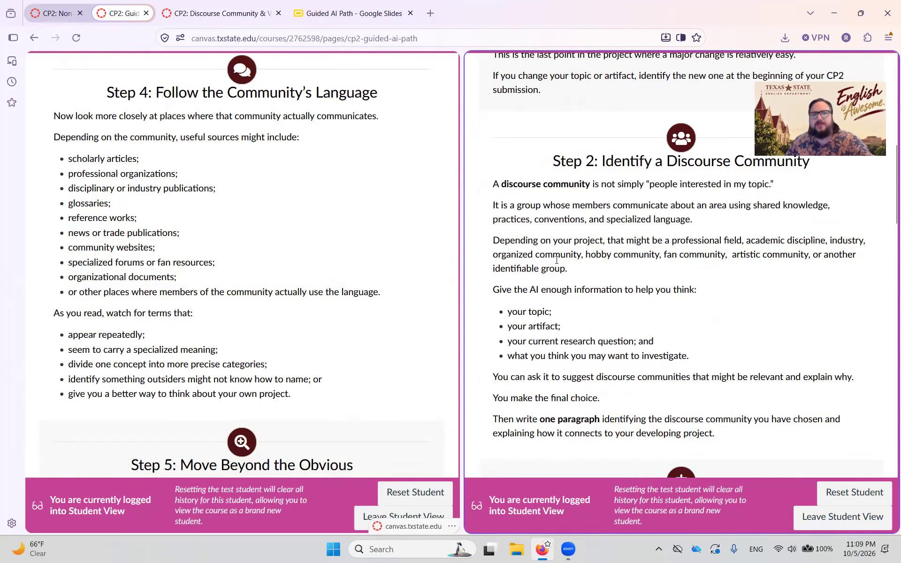
Current video reference · 02:05
Current screen
Non-AI page shows community sources; AI page shows community identification and candidate vocabulary.
Proposed visual
Replace scrolling with a documentation comparison. AI: term + own definition + AI tool + verification source. Non-AI: term + own definition + discovery source.
Proposed narration
Documentation differs. AI-path students name the tool and the non-AI source that verifies each term. Non-AI students document where they found each term; that source already provides evidence of community use.
Revision purpose
Explain the documentation difference without adding a verification requirement to the non-AI path.
10 · 02:15–02:30
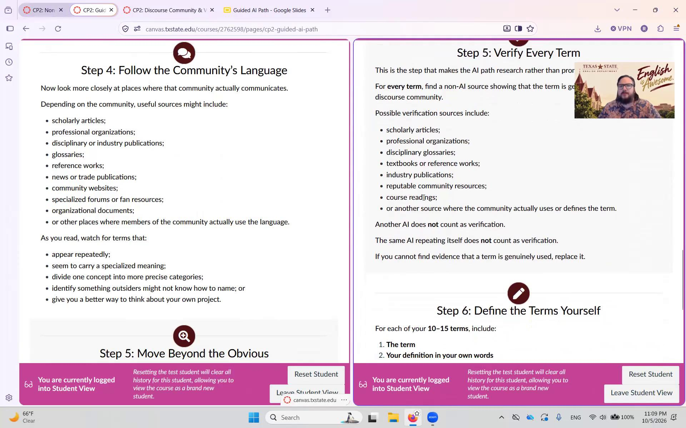
Current video reference · 02:15
Current screen
AI page: Verify Every Term and Define the Terms Yourself; non-AI page moves beyond obvious terms.
Proposed visual
Show three short rules: Verify every AI term. Replace unsupported terms. Write your own definitions.
Proposed narration
Another AI answer does not count as verification. Replace unsupported terms. On both paths, students explain meanings themselves; on the AI path, they must not ask AI to rewrite the definitions.
Revision purpose
Replace a long AI statement with specific, actionable directions.
11 · 02:30–02:45
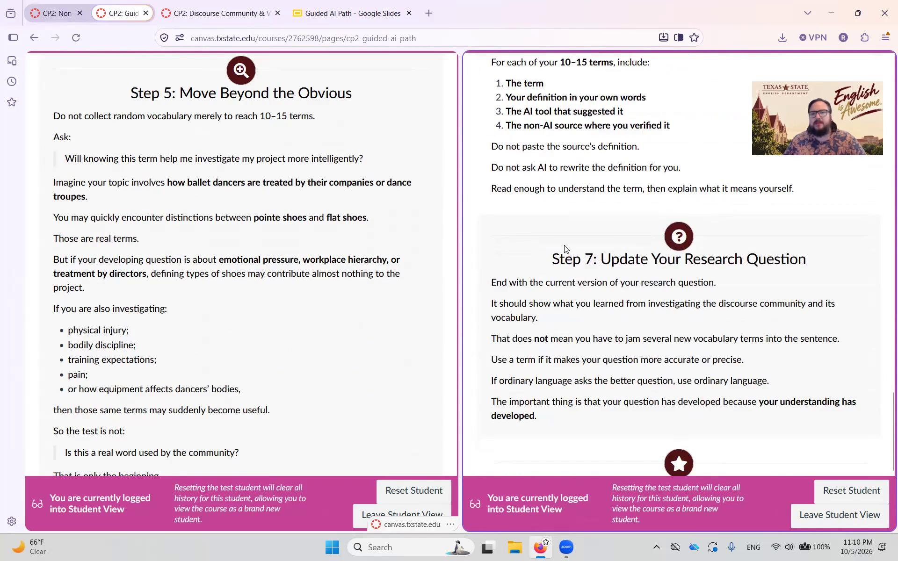
Current video reference · 02:35
Current screen
Updated research question and What Good Work Looks Like on the paired pages.
Proposed visual
Show the ballet example: shoe terms → useful for injury research? Less useful for workplace hierarchy? Then show a more focused question.
Proposed narration
A real term is not automatically useful. Ballet shoe terms might help an inquiry about injury, but add little to one about workplace hierarchy. Choose vocabulary that helps the inquiry, then refine the question.
Revision purpose
Use the original assignments’ example to make relevance and question development concrete.
12 · 02:45–03:00
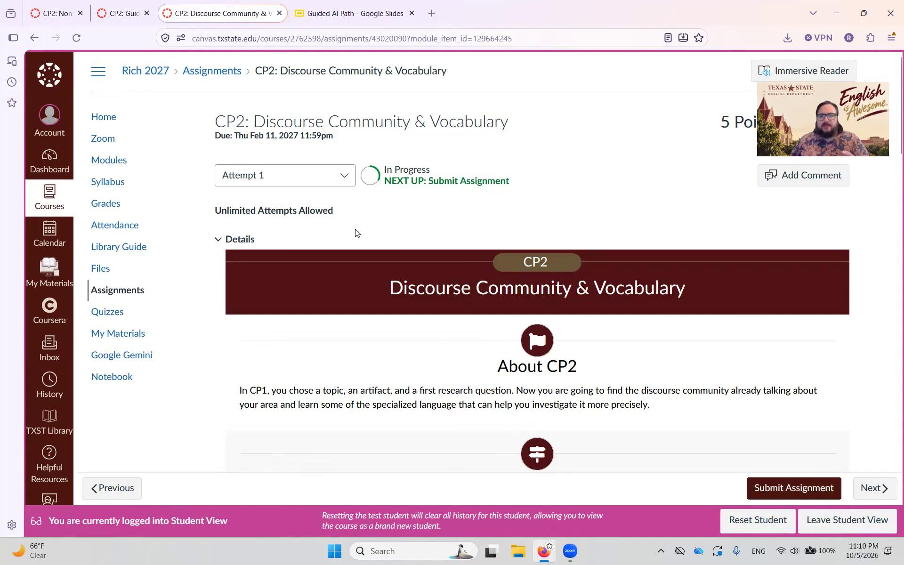
Current video reference · 02:55
Current screen
Return to central assignment; approach submission area.
Proposed visual
Replace navigation with an outcome card: Communication • Critical thinking • Personal responsibility. Pair each with rubric evidence.
Proposed narration
For instructors, common evidence connects both routes to course goals: communication through definitions, critical thinking through evidence and a refined question, and personal responsibility through documentation. The rubric assesses those goals across both paths.
Revision purpose
Answer JMS’s instructor-benefit question with explicit links to the supplied learning outcomes.
13 · 03:00–03:15
Current video reference · 03:05
Current screen
Upload interface, then shared CP2 rubric.
Proposed visual
Show a closing checklist: Choose a path. Explain the community. Document 10–15 terms. Refine the question. Submit PDF.
Proposed narration
Keep the directions brief: choose a path, explain the community, define and document ten to fifteen useful terms, and refine the question. Submit a PDF. Specialized language belongs in the question only when it helps.
Revision purpose
Keep the required actions visible and concise, without implying that more words create clarity.
14 · 03:15–03:20.1
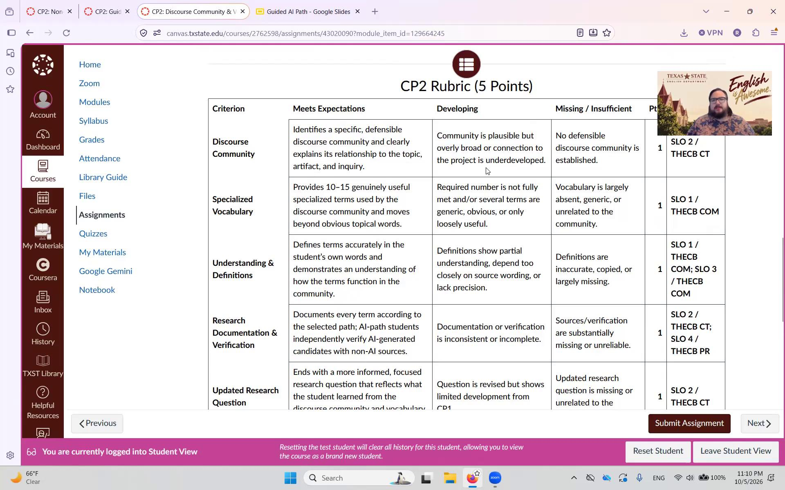
Current video reference · 03:15
Current screen
Shared rubric remains on screen at the end.
Proposed visual
Return to the two paths converging on Shared Outcomes.
Proposed narration
Two paths. Shared outcomes. Students choose the route and show the learning.
Revision purpose
Close on the purpose, not navigation.